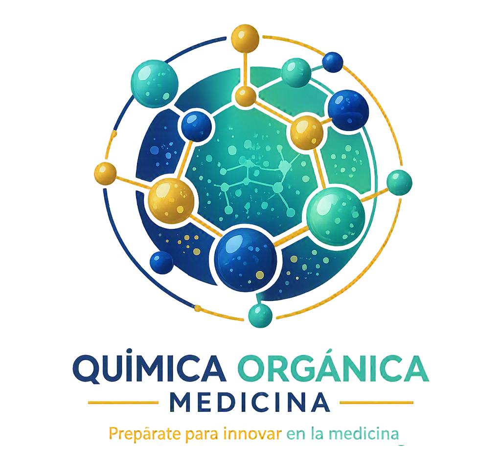

Especializada para alumnos de Medicina
Capítulo 11: Carbohidratos
| Criterio | Clasificación | Ejemplos |
|---|---|---|
| Grupo funcional | Aldosas (aldehído) / Cetosas (cetona) | Glucosa (aldosa), Fructosa (cetosa) |
| Átomos de carbono | Triosas (3), Tetrosas (4), Pentosas (5), Hexosas (6), Heptosas (7) | Gliceraldehído (triosa), Ribosa (pentosa) |
| Número de unidades | Monosacáridos, Disacáridos, Oligosacáridos (3-10), Polisacáridos (>10) | Glucosa, Sacarosa, Almidón |
| Carácter reductor | Reductores y No reductores | Maltosa (reductor), Sacarosa (no reductor) |
| Disacárido | Composición | Enlace | Poder Reductor |
|---|---|---|---|
| Maltosa | Glucosa + Glucosa | α 1-O-4' | Sí (un C anomérico libre) |
| Celobiosa | Glucosa + Glucosa | β 1-O-4' | Sí (un C anomérico libre) |
| Lactosa | Galactosa + Glucosa | β 1-O-4' | Sí (un C anomérico libre) |
| Sacarosa | Glucosa + Fructosa | α 1-O-β 2' | NO (ambos C anoméricos unidos) |
Haz clic en cada nodo para desplegar u ocultar sus ramas.
Haz clic en la tarjeta para voltearla y ver la respuesta. Luego califícate con honestidad.
Deficiencia de la enzima β-galactosidasa (lactasa) en el borde en cepillo del intestino delgado. La lactosa (Gal-β1,4-Glc) no se hidroliza, llega al colon donde la flora bacteriana la fermenta, produciendo gases y ácidos que causan los síntomas.
La celulosa tiene enlaces β 1-O-4, y los humanos carecemos de celulasas. Sin embargo, actúa como fibra dietética insoluble, aumentando el bolo fecal, reteniendo agua y estimulando el peristaltismo intestinal, previniendo el estreñimiento.
La ramificación (enlaces α 1-O-6 cada 8-12 residuos) crea múltiples extremos no reductores. Esto permite que las enzimas (glucógeno fosforilasa) liberen moléculas de glucosa de forma masiva y rápida cuando el cuerpo necesita energía urgente (ej. ejercicio, ayuno).
Detecta azúcares reductores (como la glucosa) en medio básico, reduciendo el Cu²⁺ a Cu₂O (precipitado rojo ladrillo). Funciona con glucosa porque tiene su carbono anomérico libre (hemiacetal). No funciona con sacarosa porque su enlace une ambos carbonos anoméricos (acetal), "bloqueando" el poder reductor.
La amilosa forma una estructura helicoidal que atrapa moléculas de yodo (I₃⁻), formando un complejo de transferencia de carga de color azul intenso. Es una prueba cualitativa específica para almidón.
Para recordar los epímeros de la glucosa: la Manosa difiere en el carbono C2, y la Galactosa difiere en el carbono C4.
En la conformación de silla de la glucosa, el anómero β tiene todos sus grupos OH en posición ecuatorial, lo que lo hace más estable (64% en equilibrio) que el α (axial, 36%).
La Sacarosa tiene sus Sdos carbonos anoméricos unidos (Glc α1 → β2 Fru). Al estar "bloqueados", NO es reductora ni presenta mutarrotación.
El almidón tiene enlaces α (digeribles por nosotros). La celulosa tiene enlaces β (forman barreras estructurales, fibra no digerible).
El agua de bromo es ácida, por lo que no provoca la tautomería de las cetosas. Solo oxida el aldehído de las aldosas a ácido, sirviendo para distinguirlas.
Estos reactivos son básicos. En medio básico, las cetosas se convierten en aldosas vía intermedio enodiol, por lo que TODOS los monosacáridos dan positivo.
Haz clic en cada término para ver su definición:
Error: pensar que D significa siempre dextrógiro (+).
Error: asumir que todos los disacáridos dan positivo en Benedict.
Error: pensar que la celulosa tiene enlaces alfa.
Error: afirmar que la fructosa no reacciona con Fehling o Tollens por ser cetona.
Error: creer que un glicósido en solución cambia su rotación óptica.
Cada ciclo muestra 10 preguntas al azar de una base de 30. Cada vez que entras a esta pestaña o terminas un ciclo se sortean preguntas nuevas.